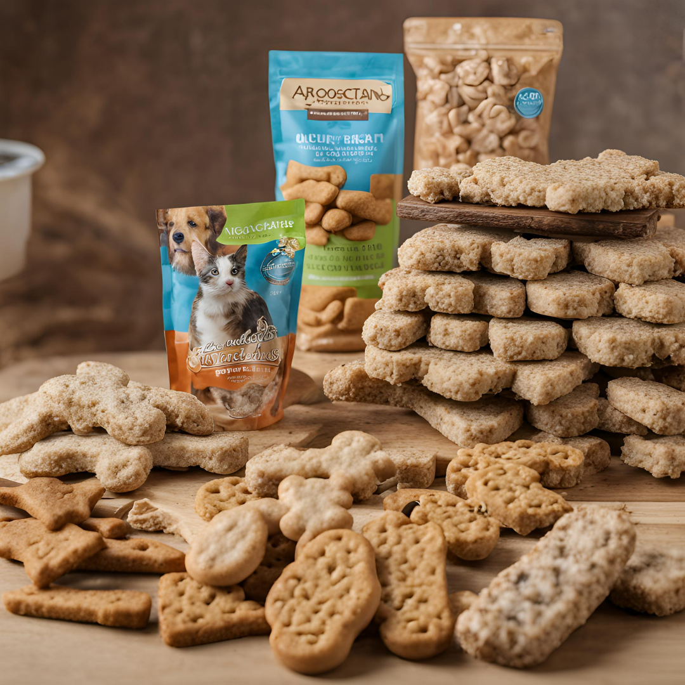

Bem-vindo à Agrocaetano, sua loja de confiança para todas as necessidades agropecuárias em Itapoã! Oferecemos uma ampla gama de produtos e serviços de qualidade, incluindo rações, insumos agrícolas e equipamentos modernos. Nossa equipe especializada está pronta para ajudar, garantindo uma experiência excepcional para nossos clientes. Visite-nos na Av. Principal e descubra por que somos a escolha número um dos profissionais do campo em busca de qualidade e atendimento personalizado.
Animais:
Na Agrocaetano, atendemos todas as necessidades de animais de estimação, desde cães e gatos até aves, peixes e roedores. Oferecemos uma variedade completa de produtos e serviços para garantir o bem-estar de seus companheiros, com orientação personalizada de nossa equipe experiente. Visite-nos para encontrar tudo o que precisa para seus amigos peludos, escamosos ou emplumados!
.png)
.png)
.png)
Medicamentos:
Na Agrocaetano, fornecemos uma ampla gama de medicamentos para animais de todas as esp√©cies, garantindo seu bem-estar e sa√∫de. Nossa loja oferece uma sele√ß√£o completa de produtos farmac√™uticos veterinários, incluindo medicamentos para c√£es, gatos, aves, peixes, roedores e muito mais. Conte com nossa equipe especializada para orienta√ß√£o e conselhos sobre os melhores tratamentos para seus animais de estima√ß√£o. Visite-nos e encontre todos os medicamentos que voc√™ precisa para cuidar da sa√∫de de seus amigos peludos, escamosos ou emplumados! üêæüê¶üê†üê≠üê±üê∂
.png)
Petiscos:
Na Agrocaetano, voc√™ encontrará uma sele√ß√£o tentadora de petiscos para animais de estima√ß√£o de todas as esp√©cies. De deliciosos biscoitos para c√£es e guloseimas para gatos a snacks para aves, peixes e roedores, oferecemos op√ß√µes que s√£o tanto saborosas quanto saudáveis. Feitos com ingredientes de qualidade, nossos petiscos s√£o ideais para recompensar, treinar e mimar seus queridos amigos de estima√ß√£o. Passe em nossa loja hoje mesmo e surpreenda seu animal de estima√ß√£o com os melhores petiscos do mercado! üêæüê¶üêüüê≠üê±üê∂
.png)
.png)

Jardinagem:
Explore a diversidade da natureza em casa com a Agro Caetano! Em nossa área de jardinagem, oferecemos uma ampla seleção de sementes, vasos de plantas, rastelos e adubos para criar um jardim exuberante. De flores coloridas a ervas aromáticas, nós fornecemos tudo o que você precisa para começar. Nossa equipe está pronta para oferecer orientações e conselhos para garantir o sucesso do seu projeto de jardinagem. Venha nos visitar e transforme seu espaço em um refúgio verde e sereno!
.png)
.png)
Banho e Tosa:
Explore a diversidade da natureza em casa com a Agro Caetano! Em nossa área de jardinagem, oferecemos uma ampla seleção de sementes, vasos de plantas, rastelos e adubos para criar um jardim exuberante. De flores coloridas a ervas aromáticas, nós fornecemos tudo o que você precisa para começar. Nossa equipe está pronta para oferecer orientações e conselhos para garantir o sucesso do seu projeto de jardinagem. Venha nos visitar e transforme seu espaço em um refúgio verde e sereno!
.png)
.png)
Equipe da Agro Caetano
.png)
Cargo: Gerente de Vendas
Descrição: Ana é responsável por coordenar todas as atividades relacionadas às vendas na Agro Caetano.
Experiência: Mais de 10 anos de experiência no setor de vendas de produtos agropecuários.
.png)
Cargo: Veterinária
Descrição: Maria é especializada em cuidados veterinários para animais de estimação e animais de produção.
Experiência: Formada há 8 anos e atuando na Agro Caetano desde então.
.png)
Cargo: Assistente Administrativa
Descrição: Ana cuida da administração geral da loja, incluindo atendimento ao cliente e gestão de estoque.
Experiência: Trabalha na Agro Caetano há 5 anos.